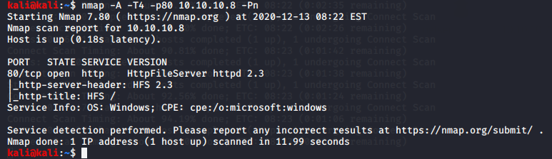

staryed nmap

searched abt hfs 2.3 exploit got meterpreter command bt didnt get root access

lecture notes :
 '
'
by defualt hfs doesnt have default login credentials so u gotta set them up
on clickig at hte bottom rejetto pops up whihc makes these file servers

google just rejetto hfs 2.3 exploit
https://www.rapid7.com/db/modules/exploit/windows/http/rejetto_hfs_exec/
got this site
as its windows 2012 so high chance that its 64 bit so would try with that payload first and if that doesnt work then we would try with the other one


thus now gotta perform privelege escalation

for 64 bit machines local exploit suggestor is tough to give results like it works better forr 32 bit machines comparititvely

these both were tried bt didnt give us privelege escalation which we wanted
now would do manual
https://www.fuzzysecurity.com/tutorials/16.html
very good site for this
so its a very deep method tbh
this is better for ctf
https://github.com/rasta-mouse/Sherlock
used this as its easier and less manual
Windows 2012 R2 (6.3 Build 9600) copied this and went to google
https://www.exploit-db.com/exploits/39719
this site mentioned abt ms16-032 so googled abt it


boom and we are done
now trying the manual way too
so tried with sherlock this time
copied that script into locally made sher.ps1 now host it and then trasnfer it


thus even got the vulnerable ones
so other way than to exploit any of these is to google windows exploit suggestor
https://github.com/AonCyberLabs/Windows-Exploit-Suggester
went here

./windows-exploit-suggester.py --database 2014-06-06-mssb.xlsx --systeminfo win7sp1-systeminfo.txt
this sort of format is required by it

lke this got very very much info
tried with ms16-098
downloaded that file from the site mentioned


thus it was downloaded already and we couldve grabbed it from there too na
so ratger donwlaoded the executabel directly

so now hosting the file from here to the machine using certutil

and boom!!

this all u gotta figure it out on your own also windws exploit suggester gave a hell lot of exploits thats quite lengthy